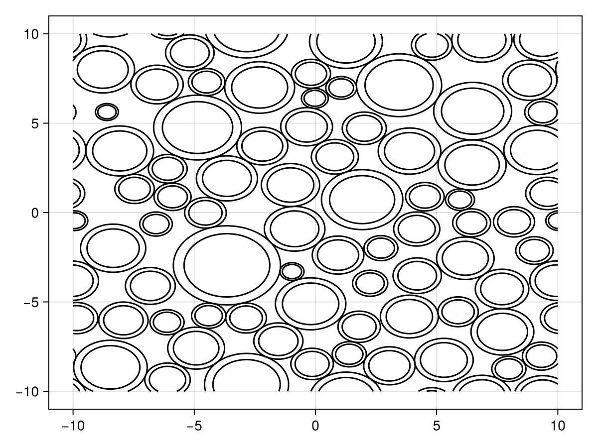

Obstructions to free diffusion
Defining the geometry
MCMRSimulator.jl comes with a variety of basic components that can be used to represent various components in the tissue microstructure.
| Component | Class | Constructor | Dimensionality |
|---|---|---|---|
| infinite walls | Wall | walls | 1 |
| hollow infinite cylinder | Cylinder | cylinders | 2 |
| Annulus with inner and outer cylinders | Annulus | annuli | 2 |
| Spirals | Spiral | spirals | 2 |
| hollow sphere | Sphere | spheres | 3 |
| mesh | Mesh | see Defining a mesh | 3 |
The constructors for these components all have a similar interface. Some expect certain component-specific arguments (e.g., radii for spheres and cylinders. Some also have component-specific keyword argumetns (e.g., the keywords regarding the off-resonance produces by Myelinated cylinders). Finally, they expect a set of keyword arguments that control their location. These arguments are identicaly across all constructors (although the expected input depends on the dimensionality of the component as listed in the table above):
positions: Set the positions for each generated componentsrepeats: Set the distance with which all components should be repeatedrotation: Applies a single rotation to the whole system.
Components with a lower dimensionality are defined by default along the x-axis (for dimensionality of 1) or the x-y plane (for dimensionality of 2). In other words, the normal of the walls point in the x-axis by default, while the cylinders point in the z-axis. Shifts and repeats should only be provided in this lower-dimensional space. The rotation can be used to define these components along other lines/planes.
For example, we can create two base cylinders, which repeeat infinitely by running:
using MCMRSimulator
geometry = cylinders(sqrt(0.5), positions=[[0, 0], [1, 1]], repeats=[2, 2])
Alternatively, the same configuration could be produced with a single cylinder by providing a rotation.
using MCMRSimulator
rotation = [
sqrt(0.5) sqrt(0.5) 0.
-sqrt(0.5) sqrt(0.5) 0.
0. 0. 1.
]
geometry = cylinders(sqrt(0.5), repeats=[sqrt(2), sqrt(2)], rotation=rotation)
Myelin can be added to the cylinders, spirals, or annuli as described here.
A geometry is defined by either the TransformObstruction returned by a single call to these constructors or by an array of TransformObstruction objects.
Randomly distributed cylinders/annuli/spirals
A random set of positions and radii can be created using random_positions_radii. The user in this case sets a target density (70% in the example below) and over which length scale the configuration should repeat itself (20x20 micrometer in the example below).
(positions, outer_radii) = random_positions_radii((20, 20), 0.7, 2)These can be used to produce randomly distributed cylinders:
geometry = cylinders(outer_radii; positions=positions, repeats=(20, 20))
When used as initialisation for annuli or spirals, an inner radius will also need to be computed:
inner_radii = 0.8 .* outer_radii
geometry = annuli(inner_radii, outer_radii; positions=positions, repeats=(20, 20))